Авторский символизм и традиционный рисунок Custom symbolism & traditional graphics Авторський символізм та традиційний малюнок
Рисую для тебя. Услуги, цены и вдохновляющие примеры моих работ. От уютных портретов до метафизических сюжетов. Drawing for you. Services, prices and inspiring examples of my work. From cozy portraits to metaphysical plots. Малюю для тебе. Послуги, ціни та надихаючі приклади моїх робіт. Від затишних портретів до метафізичних сюжетів.
Смотреть услуги View services Дивитись послуги
Меня зовут Женевьева — я художник и иллюстратор.
Художественное образование я получила в театрально-художественном колледже, а свой настоящий творческий путь начала в 2022 году — в момент, когда рисование стало для меня не просто искусством, а важной частью моей жизни.
Для меня искусство — это язык, через который можно передавать эмоции и чувства. Я создаю иллюстрации, в которых важны не только линии и детали, но и ощущения, которые остаются после просмотра работы.
Сознательно выбираю традиционные живые материалы — бумагу, механический карандаш, тонкие линеры и краски. Век цифровых технологий прекрасен, но для меня именно ручной труд, прикосновение грифеля к листу, движение кисти и создание сложных, кропотливых узоров — это настоящая медитация. Это способ остановиться, выдохнуть и дать себе пространство просто быть.
Под именем Art Jenevieva я соединяю творчество, символизм и тёплую атмосферу в стиле ретро. Каждая работа — это маленькая история, созданная с вниманием к деталям и внутреннему смыслу.
My name is Jenevieva — I am an artist and illustrator.
I received my art education at the theater and art college, and my real creative journey began in 2022 — the moment when drawing became not just art for me, but an essential part of my life.
For me, art is a language through which we convey emotions and feelings. I create illustrations where not only lines and details matter, but also the aftertaste and sensations left behind.
I consciously choose traditional handcraft materials — paper, mechanical pencils, fine liners, and paints. The digital age is beautiful, but hand labor, the touch of lead on paper, the flow of a brush, and compiling complex, intricate patterns — is a true meditation. A way to slow down, breathe out, and give myself space to simply exist.
Under the name Art Jenevieva, I combine creativity, symbolism, and a warm retro atmosphere. Each work is a small story created with attention to detail and inner meaning.
Мене звати Женев'єва — я художниця та ілюстраторка.
Художню освіту я здобула в театрально-художньому коледжі, а свій справжній творчий шлях розпочала у 2022 році — у момент, коли малювання стало для мене не просто мистецтвом, а важливою частиною мого життя.
Для мене мистецтво — це мова, через яку можна передавати емоції та почуття. Я створюю ілюстрації, в яких важливі не лише лінії та деталі, але й відчуття, які залишаються після перегляду роботи.
Свідомо обираю традиційні живі матеріали — папір, механічний олівець, тонкі лінери та фарби. Вік цифрових технологій прекрасний, але для мене саме ручна праця, дотик грифеля до аркуша, рух пензля та створення складних, кропітких візерунків — це справжня медитація. Це спосіб зупинитися, видихнути та дати собі простір просто бути.
Під ім'ям Art Jenevieva я поєдную творчість, символізм та теплу атмосферу в стилі ретро. Кожна робота — це маленька історія, створена з увагою до деталей та внутрішнього сенсу.

Для меня портрет — это всегда пространство для творчества. На исходном фото мужчина просто стоял, но по задумке для этого подарка я поместила его за фортепиано. Так родилась атмосферная сюжетная композиция, в которой классическая живописная традиция гармонично соединилась с новой идеей. For me, a portrait is always a space for creativity. In the reference photo, the man was simply standing, but following the gift's concept, I placed him at the piano. This is how an atmospheric narrative composition was born, blending classical painting tradition with a fresh idea. Для мене портрет — це завжди простір для творчості. На вихідному фото чоловік просто стояв, але за задумом для цього подарунка я зобразила його за фортепіано. Так народилася атмосферна сюжетна композиція, в якій класична живописна традиція гармонійно поєдналася з новою ідеєю.


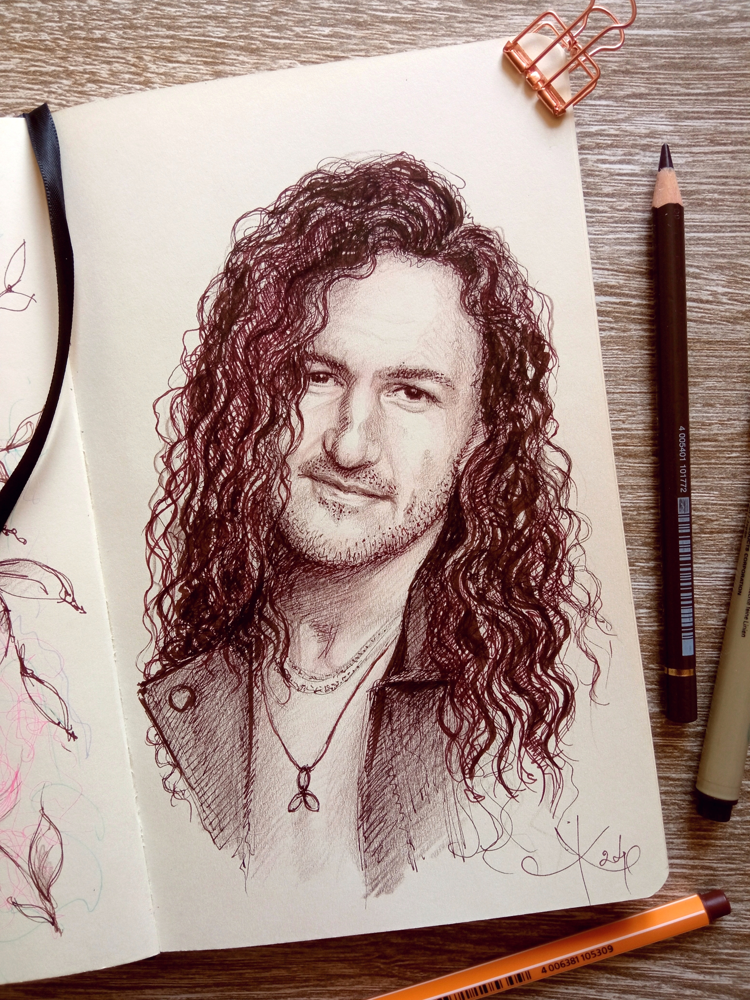
В серии авторских портретов я исследую грань между детальной проработкой и выразительностью линии. Работа с традиционной графикой помогает мне тонко передать пластику лица, характер и внутреннюю харизму человека. In this series of original portraits, I explore the fine line between detailed rendering and expressive stroke. Working with traditional graphics helps me reveal facial contours, personality, and subtle charisma. У серії авторських портретів я досліджую межу між детальною проробкою та виразністю лінії. Робота з традиційною графікою допомагає мені тонко передати пластику обличчя, характер та внутрішню харизму.
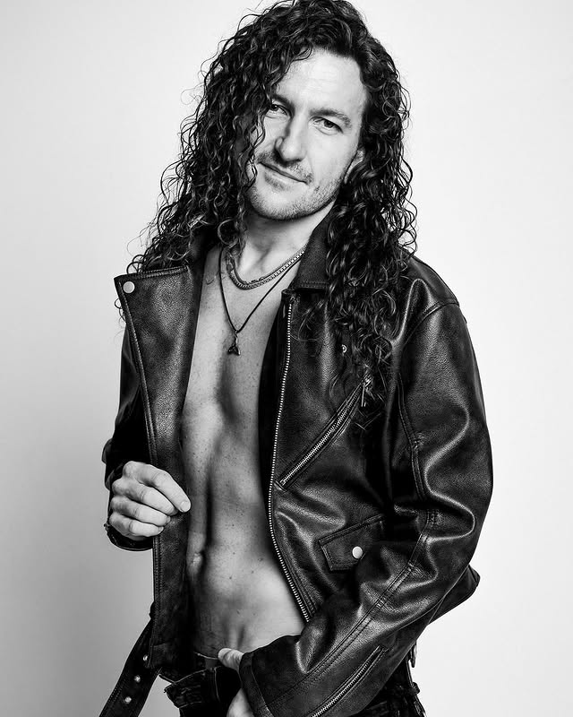
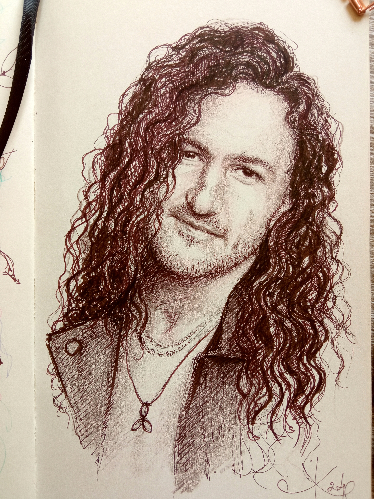
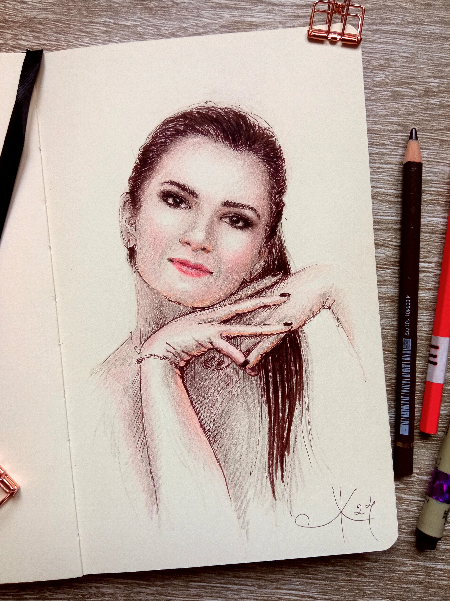
В этом портрете мне хотелось передать изящество и особую праздничную атмосферу. Робота над жестом и взглядом требовала тонкой графической проработки, чтобы сохранить нежность и естественную грацию. In this portrait, I wanted to capture elegance and a special festive atmosphere. Working on the gesture and gaze required delicate graphic rendering to preserve tenderness and grace. У цьому портреті мені хотілося передати витонченість та особливу святкову атмосферу. Робота над жестом і поглядом вимагала тонкого графічного опрацювання, щоб зберегти ніжність та грацію.
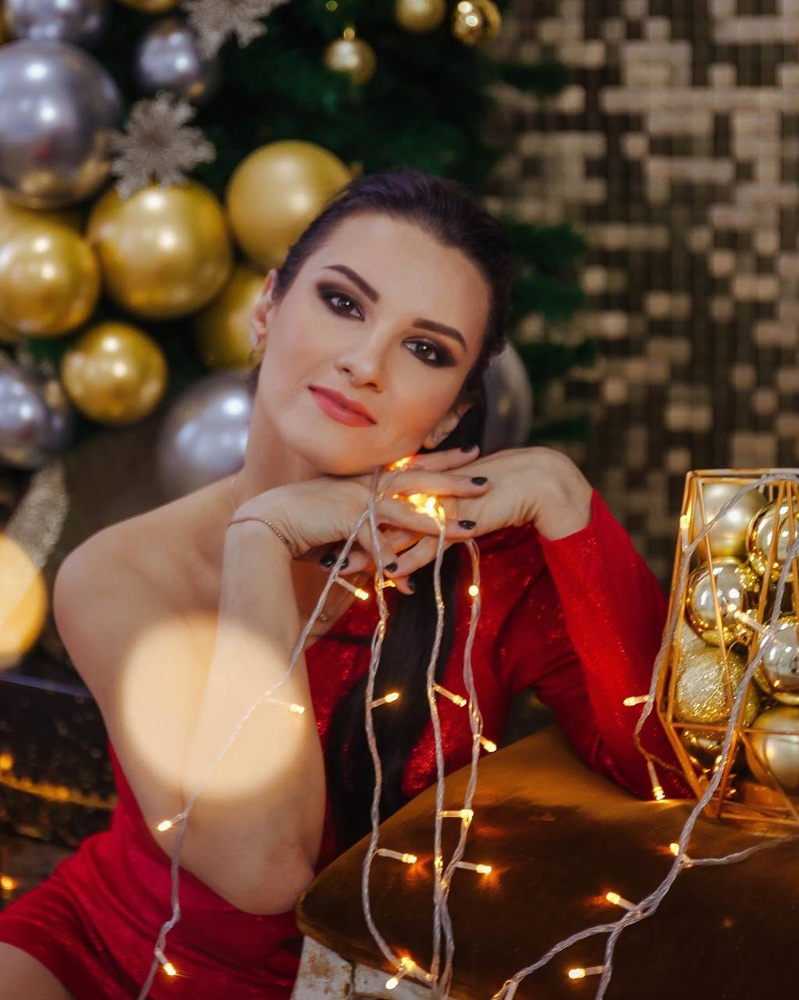
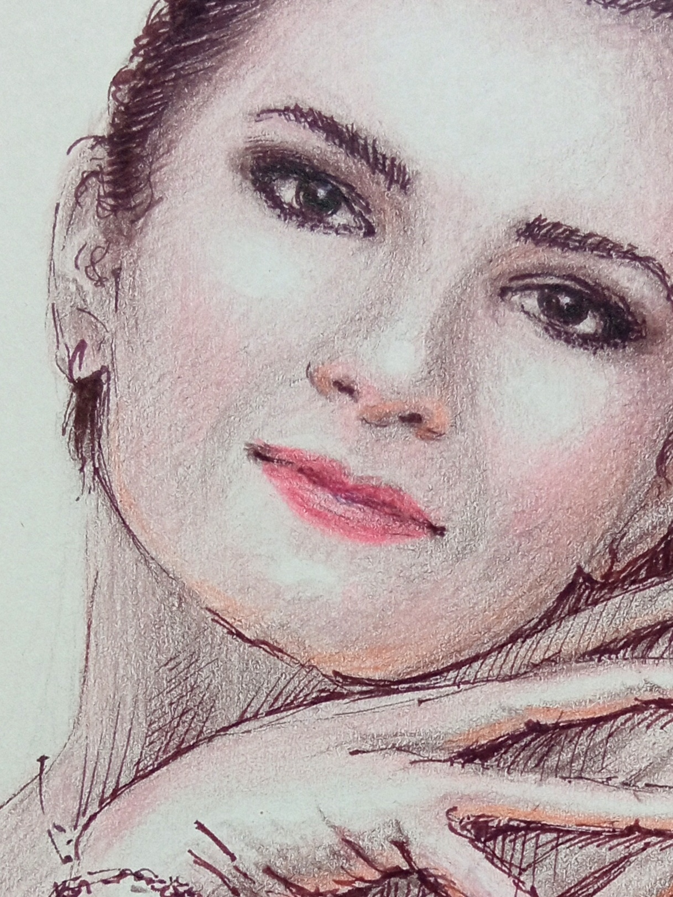
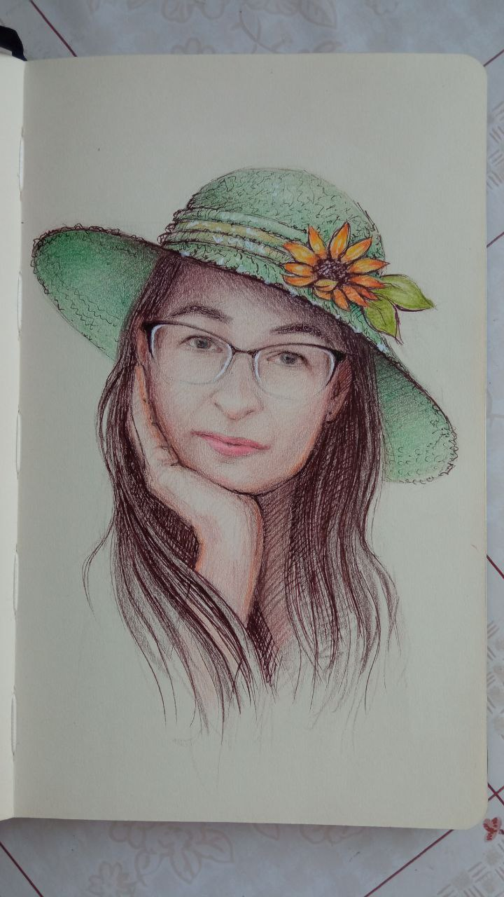
Работая по фото, я часто меняю детали для лучшего раскрытия образа. На оригинале девушка была в другом головном уборе, но я добавила эту зеленую шляпку. Цветовая гамма была подобрана интуитивно, чтобы максимально точно отразить внутреннюю энергию героини. When working from a photo, I often change details to better reveal the subject's essence. In the original, she wore a different headpiece, but I added this green hat. The color palette was chosen intuitively to reflect her inner energy. Працюючи за фото, я часто змінюю деталі для кращого розкриття образу. На оригіналі дівчина була в іншому головному уборі, але я додала цей зелений капелюшок. Колірна гама була підібрана інтуїтивно, щоб точно відобразити внутрішню енергію героїні.
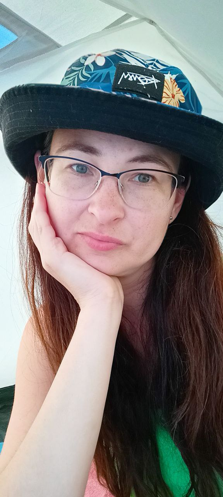
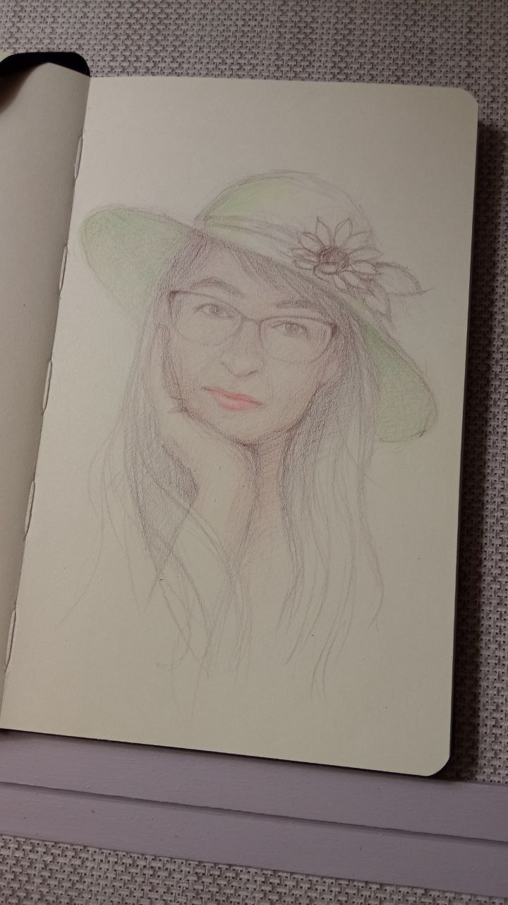
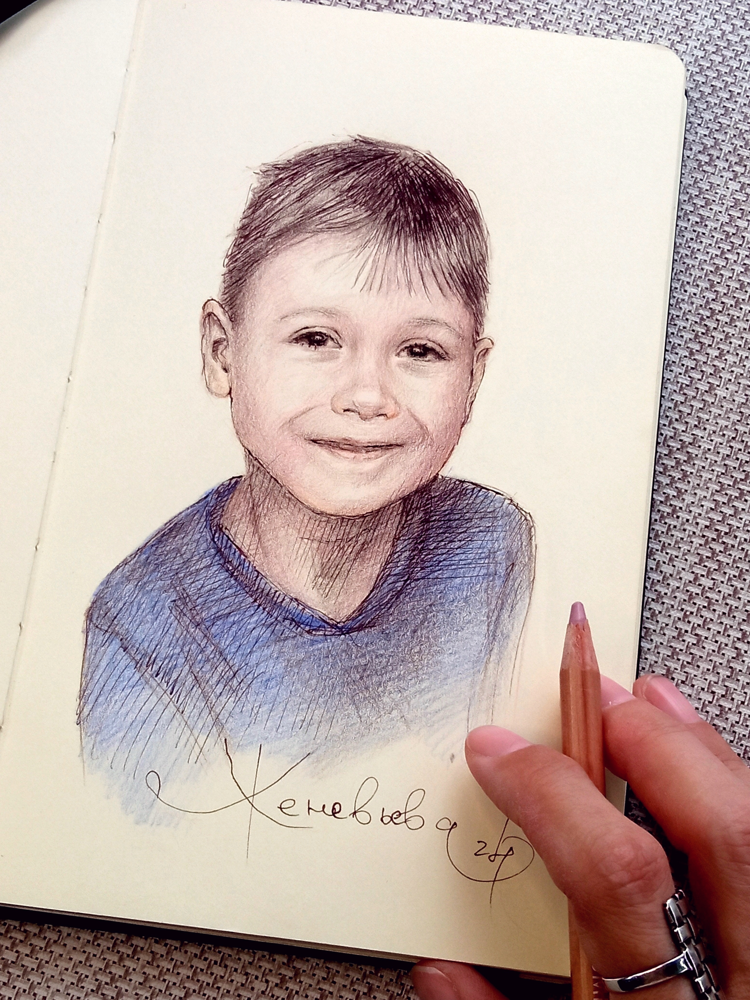
Детские портреты всегда требуют особой легкости. Моей целью было поймать эту чистую, искреннюю улыбку и живой огонек в глазах. Мягкие переходы цвета подчёркивают непосредственность и свет эмоций. Children’s portraits always call for a light touch. My goal was capturing that pure, genuine smile and the spark in his eyes. Soft color transitions highlight the warmth of childhood joy. Дитячі портрети завжди вимагають особливої легкості. Моєю метою было зловити цю чисту, щиру посмішку та живий вогник в очах. М'які переходи кольору підкреслюють світло емоцій.
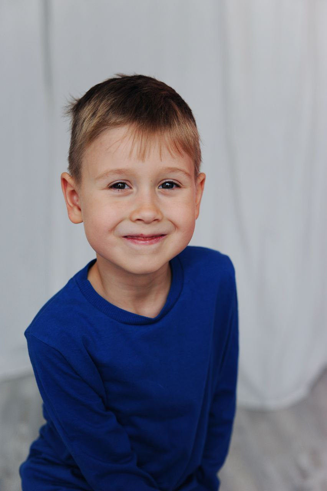
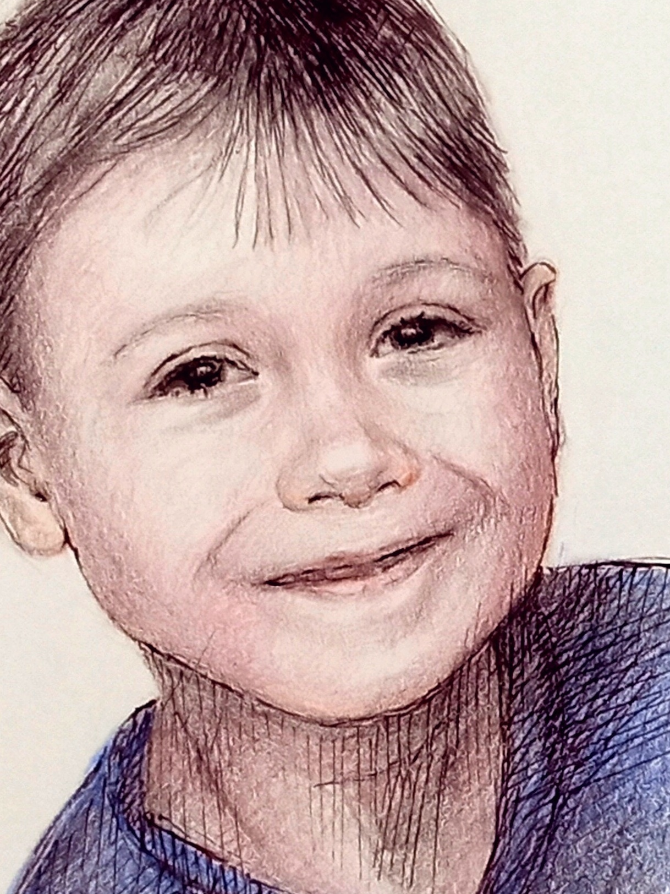

Главный акцент здесь — на мягкости светотени и детализации волос. Я старалась передать спокойную, естественную красоту и открытый взгляд, сохраняя тонкую гармонию традиционного рисунка. The main focus here is on soft light and shade and hair texture. I aimed to reveal a calm, natural beauty and an open gaze, maintaining the subtle harmony of traditional drawing. Головний акцент тут — на м'якості світлотіні та текстурі волосся. Я намагалася передати спокійну, природну красу та відкритий погляд, зберігаючи тонку гармонію традиційного малюнка.


Особенный для меня проект. Каждая иллюстрация в этом календаре полностью нарисована цветными и графитными карандашами. Мне хотелось передать благородство, грацию и внутреннюю силу этих животных через мягкие переходы тона и точность традиционного штриха.
A very special project for me. Every illustration in this calendar was entirely drawn with colored and graphite pencils. I wanted to convey the grace and inner power of these animals through subtle tonal transitions and fine traditional linework.
Для меня портрет — это всегда пространство для творчества. На исходном фото мужчина просто стоял, но по задумке для этого подарка я поместила его за фортепиано. Так родилась атмосферная сюжетная композиция, в которой классическая живописная традиция гармонично соединилась с новой идеей.
For me, a portrait is always a space for creativity. In the reference photo, the man was simply standing, but following the gift's concept, I placed him at the piano. This is how an atmospheric narrative composition was born, blending classical painting tradition with a fresh idea.
Для мене портрет — це завжди простір для творчості. На вихідному фото чоловік просто стояв, але за задумом для цього подарунка я зобразила його за фортепіано. Так народилася атмосферна сюжетна композиція, в якій класична живописна традиція гармонійно поєдналася з новою ідеєю.
Главный акцент здесь — на мягкости светотени и детализации волос. Я старалась передать спокойную, естественную красоту и открытый взгляд, сохраняя тонкую гармонию традиционного рисунка карандашами.
The main focus here is on soft light and shade and hair texture. I aimed to reveal a calm, natural beauty and an open gaze, maintaining the subtle harmony of traditional pencil drawing.
Головний акцент тут — на м'якості світлотіні та текстурі волосся. Я намагалася передати спокійну, природну красу та відкритий погляд, зберігаючи тонку гармонію традиційного малюнка олівцями.
Особенный для меня проект. Каждая иллюстрация в этом календаре полностью нарисована цветными и графитными карандашами. Мне хотелось передать благородство, грацию и внутреннюю силу этих животных через мягкие переходы тона и точность традиционного штриха.
A very special project for me. Every illustration in this calendar was entirely drawn with colored and graphite pencils. I wanted to convey the grace and inner power of these animals through subtle tonal transitions and fine traditional linework.
Особливий для мене проєкт. Кожна ілюстрація в цьому календарі повністю намальована кольоровими та графітними олівцями. Мені хотілося передати благородство, грацію та внутрішню силу цих тварин через м'які переходи тону та точність традиційного штриха.
Этот календарь задуман как приглашение к творчеству и медитации. Все ботанические иллюстрации я рисовала карандашами от руки. Монохромную графику цветов можно оставить в стильной минималистичной эстетике или нарисовать собственные цветовые истории.
This calendar was created as an invitation to art and meditation. All botanical illustrations were hand-drawn with pencils. The monochrome floral graphics can be enjoyed as minimal art or filled with your own colors.
Цей календар задуманий як запрошення до творчості та медитації. Усі ботанічні ілюстрації я малювала олівцями від руки. Монохромну графіку квітів можна залишити у стильному мінімалізмі або наповнити власними кольоровими історіями.
Для меня открытка — это маленький хранитель больших чувств. В этой серии иллюстраций мне хотелось передать уютом и теплом праздника. Каждая карточка создавалась вручную, чтобы стать особенным дополнением к важным словами.
For me, a postcard is a tiny keeper of big emotions. In this illustration series, I aimed to capture holiday warmth and comfort. Every card was created by hand to gently accompany your kind words.
Для мене листівка — це маленький берегиня великих почуттів. У цій серії ілюстрацій мені хотілося передати затишок та тепло свята. Кожна картка створювалася вручну, щоб стати особливим доповненням до важливих слів.
Личный и очень тонкий проект о поиске гармонии и тишины внутри. Я создала серию концептуальных графических иллюстраций, которые бережно дополняют текст и помогают настроиться на волну вдохновения и принятия себя.
A deeply personal and nuanced project about inner peace and harmony. I designed a series of conceptual graphic illustrations that complement the text and help embrace self-acceptance and quiet inspiration.
Особистий та дуже тонкий проєкт про пошук гармонії та внутрішньої тиші. Я створила серію концептуальних графічних ілюстрацій, які дбайливо доповнюють текст і допомагають налаштуватися на хвилю натхнення.
Галерея живых историй
Gallery of Living Stories
Галерея живих історій
⊕
Картина маслом в подарок
Oil Painting Gift
Картина олією в подарунок
Живопись маслом • Сюжетный портрет
Oil Painting • Narrative Portrait
Живопис олією • Сюжетний портрет
Смотреть проект на Behance ↗
View project on Behance ↗
Дивитись проєкт на Behance ↗
Исходное фотоSource PhotoВихідне фото
⊕
ДеталиDetailsДеталі
⊕
⊕
Графический портрет
Graphic Portrait
Графічний портрет
Портрет карандашами • Девушка с хвостом
Pencil Portrait • Girl with Ponytail
Портрет олівцями • Дівчина з хвостом
Смотреть проект на Behance ↗
View project on Behance ↗
Дивитись проєкт на Behance ↗
Исходное фотоSource PhotoВихідне фото
⊕
ДеталиDetailsДеталі
⊕
⊕
Авторский календарь
Author Calendar
Авторський календар
«Wise Horses» • Графика карандашом
"Wise Horses" • Pencil Graphics
«Wise Horses» • Графіка олівцем
Смотреть проект на Behance ↗
View project on Behance ↗
Дивитись проєкт на Behance ↗
ЭскизыSketchesЕскізи
 ⊕
ДеталиDetailsДеталі
⊕
ДеталиDetailsДеталі
 ⊕
⊕
 ⊕
Календарь-раскраска
Coloring Calendar
Календар-розмальовка
⊕
Календарь-раскраска
Coloring Calendar
Календар-розмальовка
«Monochrome Flowers» • Традиционный рисунок
"Monochrome Flowers" • Traditional Art
«Monochrome Flowers» • Традиційний малюнок
Смотреть проект на Behance ↗
View project on Behance ↗
Дивитись проєкт на Behance ↗
ФрагментFragmentФрагмент
 ⊕
ДеталиDetailsДеталі
⊕
ДеталиDetailsДеталі
 ⊕
⊕
 ⊕
Авторские открытки
Greeting Cards
Авторські листівки
⊕
Авторские открытки
Greeting Cards
Авторські листівки
Праздничные иллюстрации • Атмосфера
Holiday Illustrations • Atmosphere
Святкові ілюстрації • Атмосфера
Смотреть проект на Behance ↗
View project on Behance ↗
Дивитись проєкт на Behance ↗
СерияSeriesСерія
 ⊕
ДеталиDetailsДеталі
⊕
ДеталиDetailsДеталі
 ⊕
⊕
 ⊕
Иллюстрированный гайд
Illustrated Guide
Ілюстрований гайд
⊕
Иллюстрированный гайд
Illustrated Guide
Ілюстрований гайд
«The Quiet Art of Being Yourself»
"The Quiet Art of Being Yourself"
«The Quiet Art of Being Yourself»
Смотреть проект на Behance ↗
View project on Behance ↗
Дивитись проєкт на Behance ↗
СтраницыPagesСторінки
 ⊕
ДеталиDetailsДеталі
⊕
ДеталиDetailsДеталі
 ⊕
⊕